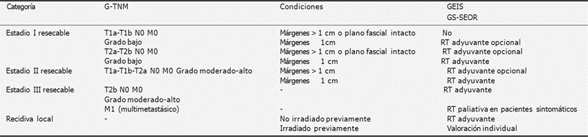

Sarcomas de partes blandas

1.5 Tratamiento de la enfermedad localizada
CIRUGÍA DEL TUMOR PRIMARIO
Biopsia
En el caso en que se considere necesario realizar una biopsia incisional en lugar de una biopsia con aguja gruesa, la biopsia la realizará el mismo equipo quirúrgico que llevará a cabo la cirugía definitiva. En caso de que el paciente se vaya a derivar a un CR, no se debe realizar la biopsia.
En los casos raros en que se indique la biopsia incisional o escisional, ésta debe realizarse en el trayecto de la cirugía definitiva. La incisión debe ser longitudinal al eje del miembro, y si se piensa dejar drenaje, éstos deben estar en la línea de la incisión definitiva con el objeto que puedan resecarse posteriormente. El abordaje quirúrgico debe atravesar sólo un compartimento. No se debe realizar una disección intermuscular para llegar a la lesión, ya que la contaminación sería importante.
Cirugía
Se realizará cirugía conservadora del miembro.
Importante
Únicamente se planteará la posibilidad de amputación cuando no sea posible conseguir márgenes amplios y/o de reconstrucción funcional del miembro.
Las etapas fundamentales de la cirugía conservadora son:
• |
La resección del tumor. |
|---|---|
• |
La reconstrucción y la cobertura de las partes blandas. |
La primera fase es la parte oncológica del procedimiento, que debe ser independiente de las siguientes fases y nunca debe ser influida por ellas. La resección se realiza según los márgenes quirúrgicos oncológicos adecuados para cada tumor. Los márgenes se definen como: intralesional, marginal, amplio y radical. El margen ideal debe ser amplio o radical. Se considera margen amplio a aquel que es mayor de 1 cm o que incluye una barrera anatómica indemne (fascia muscular, periostio, perineuro).
Habitualmente no es posible realizar una resección amplia en la zona inguinal, fosa poplítea, tobillo, pie o tronco.
Para llevar a cabo la cirugía no se debe realizar expresión del miembro con venda de Smarch para exanguinar, sino que se debe dejar el miembro en elevación durante 10 minutos y, posteriormente, inflar manguito de isquemia. La herida quirúrgica se realizará longitudinalmente al eje del miembro (no se harán incisiones transversales). Si se ha realizado una incisión previa (biopsia o resección inadecuada), se debe resecar todo el trayecto de la biopsia y el trayecto del drenaje (por ello, es importante que el drenaje se coloque en el mismo trayecto de la incisión y lo más cercano a ella).
Tras la resección del tumor se debe realizar una hemostasia cuidadosa. Si se ha colocado un manguito de isquemia, se debe soltar y realizar la hemostasia previo al cierre definitivo de la herida. Se realizará, entonces, un cambio de guantes y de instrumental quirúrgico y se procederá a la realización de biopsias intraoperatorias de las zonas más conflictivas y dudosas, dejando clips vasculares de titanio en las zonas más conflictivas para planificación de la radioterapia.
Además, se debe revisar la pieza macroscópicamente con el patólogo y asistirle en la orientación de ella y en las zonas de duda, aportando las pruebas de imágenes más demostrativas junto con la pieza tumoral. Se debe marcar la pieza tumoral (proximal, distal, etc.) con puntos de seda o grapas, y describir claramente estas marcas en la hoja de anatomía patológica.
Importante
La reconstrucción de los tejidos blandos, posterior a la resección, es fundamental. En el caso que sea difícil o imposible se debería replantear y cuestionar la cirugía conservadora.
El lecho de implantación de los diferentes tipos de reconstrucción tiene que ser adecuado con buena vascularización y con una adecuada cobertura muscular.
Importante
Las técnicas de cirugía plástica, como son la transposición de los músculos gemelos, del músculo dorsal ancho, los injertos libres o pediculados de piel o músculo-cutáneos, colaboran en la cobertura de los diferentes tipos de reconstrucción y en el cierre sin tensión de la herida, lo que contribuye de manera significativa a la disminución de la morbilidad.
Cirugía inadecuada en sarcomas. Recurrencia local
Al recibir a un paciente tratado mediante cirugía inadecuada se debe intentar recabar el máximo de información:
• |
Los cristales con cortes histológicos para la revisión anatomopatológica del caso. |
|---|---|
• |
Las pruebas radiológicas realizadas anteriores a la cirugía que nos permitirán conocer la localización anatómica del tumor e intentar la ampliación de márgenes quirúrgicos. |
• |
La hoja operatoria (o, en su defecto, se contactará directamente con el cirujano que realizó la intervención anterior) para recabar información sobre la intervención. |
Además, se solicitará una RM al recibir al paciente con la finalidad de detectar recidivas tempranas o restos tumorales que puedan quedar de la cirugía previa.
Tratamiento
La actitud terapéutica variará de acuerdo con la situación con la que nos encontremos:
• |
En un sarcoma de grado I con informe anatomopatológico de márgenes no afectados, pero sin precisar la naturaleza y la dimensión de dichos márgenes, se aconseja sólo valorar la indicación de radioterapia postoperatoria. |
|---|---|
• |
En un sarcoma de grado I con informe anatomopatológico de márgenes afectados se aconseja cirugía de ampliación de márgenes quirúrgicos y valorar después la indicación de radioterapia postoperatoria. |
• |
En un sarcoma de grado II o III no considerado con seguridad amplia según los criterios de Enneking se aconseja cirugía de ampliación de márgenes y radioterapia postoperatoria. |
Recurrencia local
Aconsejamos cirugía con márgenes de resección amplia según los criterios de Enneking, o amputación si cumple cualquiera de los criterios para ella. No se aconseja radioterapia postoperatoria si el paciente la recibió con anterioridad.
Amputación
Los criterios clásicos de amputación (localización en más de un compartimento, afectación del paquete vascular o de un nervio principal), aunque deben tenerse en cuenta, pueden cuestionarse en muchos casos. La mejora en las técnicas quirúrgicas con la utilización de injertos vasculares, las reconstrucciones de defectos masivos por parte de cirugía plástica o el uso de la perfusión aislada de extremidades (ILP, en sus siglas en inglés) pueden conseguir resultados satisfactorios en términos de control local. Antes de plantear la amputación, siempre se debe contar con la opinión de un cirujano experto en técnicas reconstructivas que valore la posibilidad de una cirugía conservadora.
Cirugía reconstructiva
La cirugía reparadora debe contemplarse siempre y desde un inicio en el tratamiento de un SPB.
Objetivos
Garantizar al máximo la radicalidad de la cirugía. El primer tratamiento condiciona el pronóstico. La radicalidad está en función de las posibilidades reconstructivas que tengamos. La reconstrucción primaria siempre es la mejor opción.
Proporcionar la máxima calidad de vida a los pacientes. La reconstrucción primaria está destinada a salvaguardar órganos, funciones, extremidades y, en definitiva, a preservar la apariencia física, pero también está destinada a facilitar los tratamientos de radioterapia y quimioterapia.
Métodos reconstructivos
Los principales métodos reconstructivos son:
La cobertura cutánea
Ya sea por afectación tumoral directa, para conseguir unos márgenes adecuados por proximidad del tumor, o porque para la extirpación tumoral haga falta una amplia disección cutánea que deje la piel desvascularizada, en muchas ocasiones la piel debe extirparse ampliamente.
Todos los métodos reconstructivos deben estar disponibles para tratamiento de los SPB. De una menor a mayor complejidad, estos métodos incluyen:
1
Cierre simple
2
Cierre simple + malla u otros materiales sintéticos reabsorbibles o no. Se utiliza para contener vísceras o proporcionar consistencia de pared (pared abdominal, pelvis, tórax, bóveda craneal).
3
Injerto cutáneo. Tendrá especial indicación en tumores superficiales, de bajo grado y extensos que no dejen al descubierto elementos donde el injerto no puede prender, como hueso denudado de periostio (excepto órbita), tendón denudado de vaina o paratendón. Es cuestionable la realización de un injerto en zonas que sabemos deberán recibir radioterapia complementaria, especialmente si estas zonas serán objeto de traumatismo continuado (p. ej., las zonas de carga [pie] y las pararticulares sometidas a movimientos de fiexo-extensión).
4
Colgajos locales. Son procedimientos en general adecuados para pequeños y medianos defectos no subsidiarios de cierre directo ni de injerto cutáneo. Dentro de los colgajos locales deberemos escoger el más fiable para cada ocasión y que, al mismo tiempo, cubra las mejores expectativas funcionales y estéticas. Los colgajos de perforante son, en general, una excelente opción.
5
Colgajos a distancia. Entendemos por colgajo a distancia el uso de un tejido con finalidad reconstructiva obtenido de un lugar distante del punto a reconstruir. Los denominamos pediculados, si no seccionamos su pedículo vascular para que alcancen el defecto, y libres, si debemos seccionar el pedículo vascular para que alcancen el defecto, lo que lleva asociado un procedimiento de microcirugía vascular.
En general, los colgajos libres son los que cubren mejor las expectativas en el tratamiento de los SPB. Asociados o no a otros procedimientos (p. ej., mallas, sintéticos, reconstrucción vascular, nerviosa y ósea), son adecuados para zonas de carga, pararticulares, o moderados y grandes defectos de las extremidades, tórax y abdomen, e imprescindibles en la mayoría de procedimientos complejos de cabeza y cuello y de la base del cráneo.
Hay un gran abanico de posibilidades y, como regla general, elegiremos el colgajo más fiable y que al mismo tiempo cubra los requerimientos funcionales y estéticos. Los colgajos libres tienen la ventaja de tener una vascularización propia, con un período de curación de herida breve que posibilita una radioterapia y quimioterapia a dosis e intervalos adecuados.
La reconstrucción vascular
Es posible la reparación primaria de los ejes vasculares de las extremidades para evitar la amputación por afectación de un eje importante. Esta reconstrucción puede ser autóloga o con material sintético.
La reconstrucción nerviosa
Es posible la reconstrucción nerviosa que, en nervios como el facial, suele tener buenos resultados. Sin embargo, en los principales nervios de las extremidades la reconstrucción nerviosa tiene, por lo general, unos resultados malos desde el punto de vista motor, aunque pueden aportar una sensibilidad protectora. Por otra parte, existen los procedimientos reparadores mediante trasferencias tendinosas y modificaciones osteoarticulares, especialmente indicados en la extremidad superior. Las ortesis son también buenas posibilidades para paliar determinadas parálisis. También, en determinados casos, se puede plantear el colgajo muscular con anastomosis motora.
La reconstrucción ósea
La reconstrucción ósea está ampliamente documentada en los sarcomas de las extremidades mediante prótesis, homoinjertos óseos de banco. Recientemente, la asociación de colgajos óseos vascularizados de peroné en combinación con homoinjertos de banco se ha mostrado eficaz, consiguiendo consolidaciones más rápidas. La reconstrucción exclusiva con peroné o cresta ilíaca vascularizada está ampliamente demostrada como útil en cabeza y cuello y en extremidades, sobre todo la superior.
La reconstrucción con materiales sintéticos
Los diferentes tipos de malla de nailon o mixtas de nailon-ácido poliglicólico son apropiadas para la reconstrucción de pared abdominal y pélvica. Es fundamental la cobertura adecuada e impedir el contacto directo a tensión con estructuras vasculares, para evitar posibles compresiones y roturas vasculares por decúbito. La pared torácica merece especiales medidas reconstructivas para salvaguardar la mecánica respiratoria. Las placas reabsorbibles de ácido poliláctico han demostrado ser muy eficaces. Como siempre, una adecuada cobertura es fundamental.
Radioterapia
Recomendaciones en STB de extremidades
Las recomendaciones que se exponen a continuación se basan en las del Grupo de Sarcomas de la Sociedad Española de Oncología Radioterápica (SEOR) y del GEIS.
Los objetivos de la radioterapia en el tratamiento de los STB son:
Control locorregional, evaluado mediante la supervivencia libre de recidiva locorregional y la supervivencia causa-específica.
Preservación funcional, evaluada mediante la aparición de complicaciones locales o secuelas funcionales, como linfedema, fibrosis, radionecrosis cutánea, fractura ósea o déficit funcional.
De acuerdo con la presentación clínica y los estudios iniciales de evaluación, los pacientes pueden asignarse a una de las categorías siguientes:
Tumores de grado bajo (Estadio I).
Tumores de grado alto (Estadios II y III) resecables.
Tumores irresecables.
Recidiva local.
En la siguiente tabla se resumen las recomendaciones sobre la realización de radioterapia en función de las categorías mencionadas.
Recomendaciones para la radioterapia en función del estadio.
Técnica de radioterapia
La técnica de irradiación (disposición de campos) y la energía de la radiación deben adaptarse al caso individual. No pueden establecerse reglas generales, salvo en los puntos siguientes:
La radioterapia debe ser tan conformada como sea posible con las técnicas disponibles en cada centro. Es recomendable disponer de un estudio dosimétrico tridimensional basado en imágenes de TC y completado con imágenes de RM. En la radioterapia postoperatoria es útil contar con estudios de imagen preoperatorios.
La adquisición de las imágenes de TC deberá realizarse cada 3 mm al menos, para conseguir radiografías digitales reconstruidas de suficiente calidad.
Para poder realizar fusión con las imágenes diagnosticas de RM, es necesario que ambas exploraciones radiológicas incluyan la pelvis, lo que permite realizar la fusión con garantías de precisión. Sería conveniente que la RM se realice con la misma inmovilización que el tratamiento radioterápico.
La extremidad debe inmovilizarse de un modo efectivo y reproducible.
No debe irradiarse la circunferencia completa de un miembro.
Debe respetarse parte de la sección de los huesos largos siempre que sea posible.
Deben respetarse las articulaciones, siempre que sea posible.
Los tumores grandes y de grado alto se deben tratar con campos más grandes que los tumores pequeños y de grado bajo.
El tejido subcutáneo y la piel no se encuentran en riesgo de infiltración tumoral, salvo que el tumor asiente en ellos o hayan sido transgredidos por maniobras diagnósticas o terapéuticas.
Volúmenes de tratamiento
Los SPB tienden a diseminar a lo largo de los planos musculares y tendinosos, respetando las fascias, membranas interóseas y periostio, barreras naturales de contención de la diseminación del tumor. Por tanto, los márgenes longitudinales deben ser más amplios que los radiales. Las recomendaciones aquí formuladas se aplican a los tumores de grado moderado/alto. Es posible que estos márgenes puedan reducirse en tumores de grado bajo. En la radioterapia preoperatoria, el volumen blanco clínico (CTV, del inglés Clinical Target Volume) inicial (CTV1) debe incluir:
El volumen tumoral (GTV definido sobre imágenes de RM en secuencias T1 con gadolinio).
• |
El edema peritumoral (definido sobre imágenes de RM en secuencias T2). |
|---|---|
• |
Un margen adicional de 1,5-2 cm. |
Si no pudiera evaluarse el edema peritumoral, los márgenes en torno al GTV definido mediante secuencias T1 debe ser de 2 cm radial y 5 cm longitudinalmente. En caso de que el margen radial sobrepase un plano fascial, debe quedar limitado por éste. En caso de que el margen longitudinal sobrepase los límites de un compartimento anatómico, debe quedar limitado por las inserciones tendinosas, con un margen adicional no mayor de 2 cm.
El volumen blanco de planificación (PTV) debe tener en cuenta las incertidumbres geométricas en la administración del tratamiento. Por ser estas dependientes de las técnicas de inmovilización y de la experiencia del personal técnico en cada centro, no pueden concretarse recomendaciones generales. Al menos debe añadirse un margen de 0,5 cm al CTV para generar el PTV.
Se encuentran en curso estudios para evaluar la seguridad de márgenes de CTV inferiores a los especificados en la radioterapia preoperatoria (Estudio fase II RTOG 0630).
En la radioterapia postoperatoria, no hay propiamente volumen tumoral (GTV). Sin embargo, la definición de un área de riesgo alto puede facilitar la definición de los volúmenes subsiguientes.
En el área de riesgo alto debe incluirse el lecho quirúrgico, definido con la ayuda de imágenes de RM postoperatoria (las secuencias T2 pueden identificar tejidos con cambios inducidos por la cirugía y las imágenes de TC pueden identificar clips metálicos) y de RM preoperatoria, la cicatriz cutánea y los trayectos de drenajes quirúrgicos.
En caso de presentarse un hematoma o linfocele, deben incluirse en el área de riesgo alto. En caso de linfadenectomía, el lecho quirúrgico de ésta se considerará también área de riesgo alto. El CTV debe incluir el área de riesgo alto con márgenes longitudinales de 5 cm y radiales de 2 cm, limitados por barreras anatómicas naturales (planos fasciales y planos óseos).
Es práctica habitual administrar una dosis más alta al área de riesgo alto, para lo que debe definirse un CTV2 que incluya la misma con un margen de 2 cm. Al menos, un margen de 0,5 cm debe añadirse al CTV para generar el PTV. Se encuentra en curso un ensayo fase III para comparar márgenes reducidos (1,5 cm longitudinal-2 cm radial), frente a márgenes estándar (5 cm longitudinal-3 cm radial) en radioterapia postoperatoria.
Recomendación
La planificación geométrica de la radioterapia debe hacer un uso intensivo de las imágenes médicas, particularmente de la RM preoperatoria y postoperatoria, y de la TC de simulación.
Dosis de radiación
La dosis prescrita en la radioterapia adyuvante se ha determinado empíricamente a partir de estudios retrospectivos. Hay pocos datos acerca de la respuesta de la dosis para orientar la prescripción en cada situación concreta, por ejemplo, en función del estado de los márgenes quirúrgicos.
La dosis debe especificarse (prescribirse) de acuerdo con las recomendaciones de la Comisión Internacional de Medidas y Unidades Radiológicas (ICRU, en sus siglas en inglés), es decir, en el punto ICRU, punto incluido en el PTV y que representa la dosis recibida por la mayor parte del volumen PTV. Generalmente, este punto se encuentra situado en la intersección de los ejes centrales de los haces de radiación. Es recomendable la aceptación de planes dosimétricos ajustados a las recomendaciones de homogeneidad ICRU: la dosis en todos los puntos del PTV debe oscilar entre 5 y +7% de la dosis prescrita. La dosis prescrita quedará condicionada por la tolerancia de los tejidos normales anejos al PTV, por lo que será frecuente realizar prescripciones adaptadas a situaciones particulares.
Radioterapia preoperatoria
La dosis en el PTV1 empleadas más comúnmente son 50 Gy en fraccionamiento convencional (1,8-2 Gy). En caso de márgenes de resección positivos (resección R1), la dosis de radioterapia postoperatoria en el PTV2 prescrita comúnmente es de 16 Gy. Algunos estudios recientes ponen en duda la necesidad de este segundo tratamiento. En los estudios de asociación de quimioterapia a la radioterapia preoperatoria se han empleado dosis de radiación ligeramente más bajas: 44 Gy.
Radioterapia postoperatoria
La dosis empleadas más comúnmente en el PTV1 son 45-50 Gy y en el PTV2 de 60-66 Gy. Los valores más bajos se prescriben sobre tumores de grado bajo con márgenes quirúrgicos negativos y los valores más altos se prescriben sobre tumores de grado alto con márgenes quirúrgicos microscópicos positivos o escasos (< 1 cm). En caso de afectación macroscópica de los márgenes de resección y ante la imposibilidad clínica o técnica de ampliarlos quirúrgicamente, la dosis total recomendada es de 70 Gy. Se emplea habitualmente fraccionamiento convencional (1,8-2 Gy).
Braquiterapia
La mayor experiencia en el tratamiento de los SPB se concentra en el tratamiento con radioterapia externa. El tratamiento con braquiterapia presenta varias ventajas frente a la radioterapia externa: la delimitación en el acto operatorio del CTV con precisión; la administración de una dosis uniforme y con dosis por fracción superior a la de la radioterapia externa (3-4 Gy), lo que mejora la eficacia biológica del tratamiento; la reducción del tiempo total de tratamiento al administrarse la braquiterapia durante el tiempo de estancia postoperatoria del paciente, y la mayor protección de tejidos sanos, al presentar una rápida caída de la dosis en cuanto nos alejamos del implante.
Los criterios de selección para realizar un tratamiento con braquiterapia como monoterapia son pacientes con SPB completamente resecados, de grado intermedio o alto y con bordes negativos (R0).
No hay indicación para tratamiento con braquiterapia como monoterapia en los sarcomas de grado bajo, dado que no se ha podido demostrar mejoría en el control local frente a cirugía sola.
El tratamiento con braquiterapia asociado a radioterapia externa disminuye el porcentaje de recidivas locales en pacientes con SPB, siendo más eficaz en pacientes con factores desfavorables, como en el caso de márgenes positivos. Los candidatos a tratamiento de braquiterapia asociada a radioterapia externa son pacientes con SPB de grado intermedio o alto con márgenes negativos o positivos, pacientes con infiltración inicial de la piel, pacientes en los cuales no es posible cubrir perfectamente el CTV por el implante con total garantía para una monoterapia, o pacientes con sospecha de contaminación del campo quirúrgico por rotura intraoperatoria del tumor.
La dosis de braquiterapia se ha extrapolado de los tratamientos de tasa de dosis baja y calculadas mediante el modelo lineal cuadrático. En los tratamientos de monoterapia se recomienda administrar una dosis equivalente a 45-50 Gy de tasa baja que, trasladada a tasa alta, representaría una dosis equivalente a 32 Gy en 8 fracciones de 4 Gy. En el tratamiento de braquiterapia como boost en tasa baja se recomienda administrar una dosis de 15-25 Gy, seguido de una dosis de radioterapia externa de 45-50 Gy.
En los tratamientos de tasa alta en SPB como boost hay una cierta variabilidad de dosis, teniendo en cuenta que los dos parámetros que conforman la prescripción son la dosis por fracción y el número de fracciones. El HDR Brachytherapy Working Group recomienda una dosis de braquiterapia de tasa alta como boost de 18 Gy administradas en 6 fracciones de 3 Gy en caso de R0 o R1, y de 21 Gy en 7 fracciones si R2. La dosis se prescribe a 0,5 cm de las fuentes y cada fracción debe separarse de la anterior más de 8 horas. La dosis de radioterapia externa deberá estar en el rango de 45-50,4 Gy. Aunque no hay estudios aleatorizados en SPB de tasa alta comparado con tasa baja, en algún estudio comparativo se señala una tasa menor de complicaciones (grados 2-4 del National Cancer Institute) de la herida quirúrgica en los pacientes tratados con tasa alta del 18 frente al 40% de los tratados con tasa baja en la misma institución.
Recomendación
La braquiterapia es un tratamiento eficaz en el control local de la enfermedad, y su principal ventaja es la reducción del volumen irradiado y, por tanto, de las complicaciones.
Quimioterapia adyuvante
La utilidad de la quimioterapia adyuvante como parte del tratamiento de los SPB de riesgo alto se ha evaluado en varios estudios. En un metanálisis publicado en 1997, se incluyó a un total de 1.568 pacientes englobados en los 14 ensayos clínicos aleatorizados publicados hasta ese momento. Se trataba de ensayos fase III que comparaban, tras el tratamiento local, quimioterapia adyuvante con esquemas que contenían doxorrubicina frente a observación. Las pautas empleadas en los diferentes estudios, sin embargo, diferían notablemente entre sí, además de utilizarse esquemas quimioterápicos con una baja intensidad de dosis, solo el 5% de los pacientes recibieron ifosfamida, la segunda droga más activa después de la doxorrubicina. También existía importante variabilidad en los criterios utilizados para selección de los pacientes (diferentes grados histológicos, ubicaciones, tamaños, histologías) y el tamaño muestral, lo que en parte podría explicar la disparidad en los resultados Este metanálisis puso de manifiesto una ventaja significativa del 10% en la supervivencia libre de recidiva a favor del tratamiento adyuvante. En la supervivencia global, la diferencia fue del 4%, aunque esta diferencia no fue estadísticamente significativa; esta ventaja, sin embargo, llegó a ser del 7% en el subgrupo de pacientes con SPB de extremidades.
Posteriormente se han comunicado dos nuevos grandes estudios de quimioterapia adyuvante. El primero se centró en pacientes con SPB localizados en extremidades, cintura escapular o pélvica, de grado alto, tamaño superior a 5 cm y localización profunda. La pauta de quimioterapia incluía epirrubicina e ifosfamida a dosis altas. Tras una mediana de seguimiento de 5 años, la supervivencia global a 5 años fue significativamente superior para los pacientes tratados con quimioterapia. Sin embargo, en un análisis posterior con un seguimiento de 7,5 años, las diferencias en supervivencia dejaron de ser significativas. Por otro lado, los resultados preliminares de un estudio de la European Organisation for the Research and Treatment of Cancer, que incluyó a 350 pacientes con SPB de grado alto de cualquier localización que fueron asignados de forma aleatorizada a recibir doxorrubicina e ifosfamida versus observación, no mostraron diferencias en supervivencia. Por último, un nuevo metanálisis actualizado que incluía 18 ensayos aleatorizados que incluyeron la combinación de antraciclinas e ifosfamida demostró un aumento significativo, aunque marginal (6%), de la quimioterapia adyuvante en la supervivencia global, lo cual indica que la asociación de doxorrubicina e ifosfamida podría tener un impacto mayor en la supervivencia que doxorrubicina sola.
En un estudio liderado por el grupo italiano con el que colaboró GEIS se demostró que la dosis completa de 3 ciclos de quimioterapia neoadyuvante con epirubicina e ifosfamida obtiene el mismo resultado que la administración de 2 ciclos adicionales en un entorno adyuvante, en STS localizado de alto riesgo de las extremidades y la pared del tronco [II, A]. Es de destacar que el resultado del 61% de la SG se mantiene también durante 10 años.
El tratamiento neoadyuvante podría preferirse al adyuvante, ya que podría aportar información pronóstica al analizar la respuesta conseguida en la pieza quirúrgica.
En otros lugares, además de las extremidades o la pared del tronco, hay pruebas menos convincentes del valor de la quimioterapia adyuvante (pe. retroperitoneo).
Asimismo, hay menos evidencia sobre el valor de la quimioterapia perioperatoria en pacientes localizados de riesgo más bajo (grado 2). Existen algunas histologías como el sarcoma pleomórfico indiferenciado, el sarcoma sinovial, el liposarcoma mixoide cs pequeñas, los tumores malignos de la vaina del nervio periférico y el leiomiosarcoma en el que la quimioterapia demuestra especial actividad. En la actualidad disponemos de herramientas como los nomogramas que predicen el riesgo de recaida y supervivencia en función del análisis de factores pronósticos (grado, tamaño, localización, edad, histología, etc) Se considera que un 40% o más de riesgo de muerte es el punto de corte para la indicación de quimioterapia perioperatoria.
No obstante, la quimioterapia adyuvante no puede sustituir en ningún caso a la administración de radioterapia complementaria cuando esté indicada. Ésta puede administrarse al finalizar la quimioterapia o inmediatamente después de la cirugía.
Tratamiento neoadyuvante: quimioterapia y quimioradioterapia neoadyuvante
Los criterios que definen al grupo de pacientes con riesgo alto de recaída local o sistémica son la presencia de sarcomas de grado alto, localización profunda y tamaño superior a 5 cm. Algunos estudios que han analizado el impacto de la quimioterapia neoadyuvante en sarcomas indican que ésta tiene una eficacia superior en estos pacientes. El número de estudios que habían evaluado el papel de la QT neoadyuvante hasta la última década ha sido escaso y además se trataban en su mayoría de estudios retrospectivos y fase II.
Un reciente estudio fase III liderado nuevamente por el grupo italiano conjuntamente con GEIS publicado en 2017 demostró que en una población de pacientes con SPB de alto riesgo, la administración de quimioterapia neoadyuvante en función de histiotipo (pe: ifosfamida a altas dosis en sarcoma sinovial, docetaxel-gemcitabina en sarcoma pleomórfico etc) no es superior a la quimioterapia estándar (epirrubicina-doxorrubicina). El beneficio observado con el régimen de quimioterapia estándar sugería que podría ser considerado un nuevo estudio que confirme el valor de la quimioterapia complementaria en sarcomas de alto riesgo. Además los datos de este estudio apoyan el empleo de este esquema de QT de forma neoadyuvante.
Algunos estudios han evaluado la administración concomitante de quimioterapia y radioterapia preoperatoria. En un estudio de fase III se comparó la administración de doxorrubicina intraarterial frente a intravenosa asociada a radioterapia en pacientes con sarcomas de extremidades, sin que se demostrara un beneficio de la administración intraarterial.
En un estudio de fase I se demostró la viabilidad de administrar doxorrubicina asociada a radioterapia. De los 22 pacientes que recibieron doxorrubicina combinada con radioterapia preoperativa estándar y que posteriormente fueron sometidos a cirugía, 11 pacientes mostraron una necrosis tumoral de al menos el 90% y, entre ellos, 2 pacientes presentaron ausencia de tumor viable.
En dos estudios se ha explorado el tratamiento con el régimen MAID intercalado con la radioterapia en dos fases de 22 Gy, para evitar la toxicidad de la doxorrubicina. En el primero de ellos, de los 48 pacientes tratados en todos los casos se pudo realizar cirugía conservadora y la mediana de necrosis tumoral fue del 95%; tanto la toxicidad hematológica como local fue importante en todos los casos. En otro estudio de diseño similar del Radiation Therapy Oncology Group las conclusiones fueron similares.
Tratamiento de los tumores localmente avanzados
Papel de la perfusión aislada de extremidad
Los pobres resultados obtenidos con frecuencia en el tratamiento de los tumores localmente avanzados han llevado a explorar objetivos como la mejora de función en la cirugía de preservación de extremidad. Con este enfoque, la administración neoadyuvante regional mediante perfusión aislada de extremidad (ILP, del inglés hiperthermic isolated limb perfusion), emerge como una modalidad atractiva mediante la cual podrían llegar al tumor dosis mucho más elevadas de fármacos citotóxicos, hasta 15-25 veces, evitando la toxicidad sistémica. La perfusión aislada de extremidades en hipertermia es un procedimiento en el que, tras separar la circulación de una extremidad de la del resto del organismo mediante un circuito de circulación extracorpórea, se trata la extremidad aislada con agentes biocitotóxicos. El líquido de perfusión está a mayor temperatura que el cuerpo (hipertermia 39.8C), lo que aumenta su efecto.
El uso de quimioterapia exclusiva en ILP no parece reducir el número de cirugías de amputación previstas antes de la ILP, según se desprende de un estudio en el que se consiguió un 43% de respuestas parciales y que se abandonó debido a los resultados frustrantes, incluso con el fármaco considerado más activo, la doxorrubicina.
La introducción de factor de necrosis tumoral alfa (TNF-a) en la ILP ha permitido conseguir entre un 20 y un 30% de respuestas completas y un 50% de respuestas parciales. La aprobación y el registro del TNF-a para ILP en Europa se basó en 4 estudios, multicéntricos, cuyo objetivo principal era conseguir una cirugía de preservación de extremidad. Este objetivo se consiguió en un 76% de los casos 2-4 meses después de la ILP. Un comité independiente evaluó a los 246 pacientes tratados en estos 4 estudios y se llegó a la conclusión que el 71% de la serie sólo hubiera podido ser tratado mediante cirugía de amputación.
Adicionalmente, este comité evaluó la supervivencia de estos pacientes comparándola con un grupo similar del registro escandinavo de SPB. Se concluyó que el TNF-a no tuvo un efecto negativo en la supervivencia (p = 0,96); la supervivencia a los 5 años estuvo alrededor del 50%. Se ha considerado al melfalán como el agente idóneo en la combinación con TNF-a.
Recomendaciones y ámbito de aplicación
Tras lo expuesto, la perfusión aislada de extremidad con TNF-a y melfalán puede considerarse en las indicaciones siguientes:
1
Pacientes con sarcoma de extremidad no abordable mediante cirugía conservadora en los que la amputación fuera la única opción para intentar ejecutar posteriormente una cirugía de preservación funcional de la extremidad.
2
Pacientes con afectación sistémica y local en los que no se recomendara efectuar una cirugía radical de la extremidad (por el contexto metastásico) y se buscara un control local paliativo.